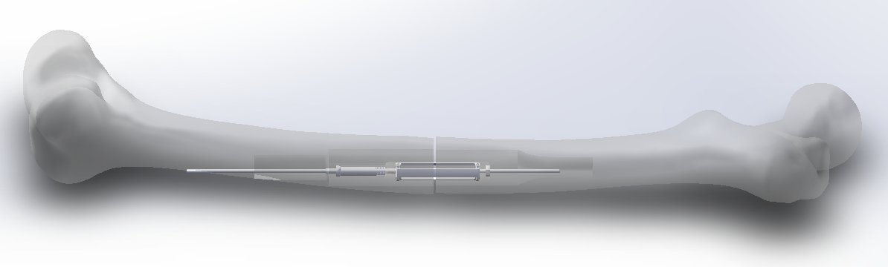
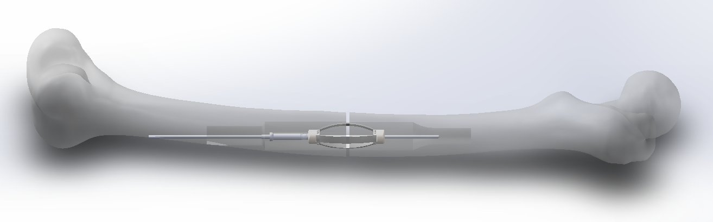
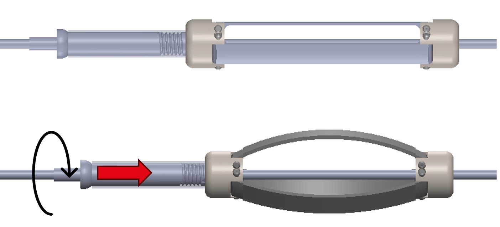
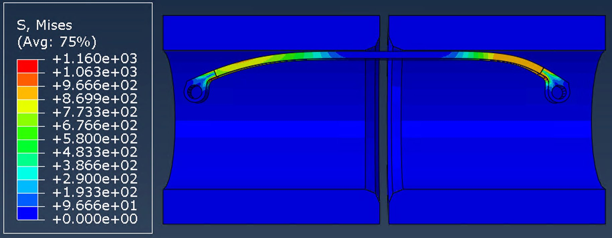
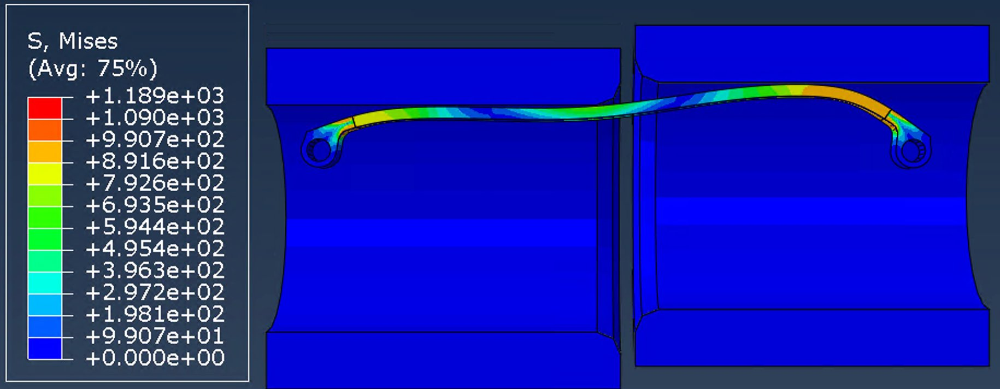
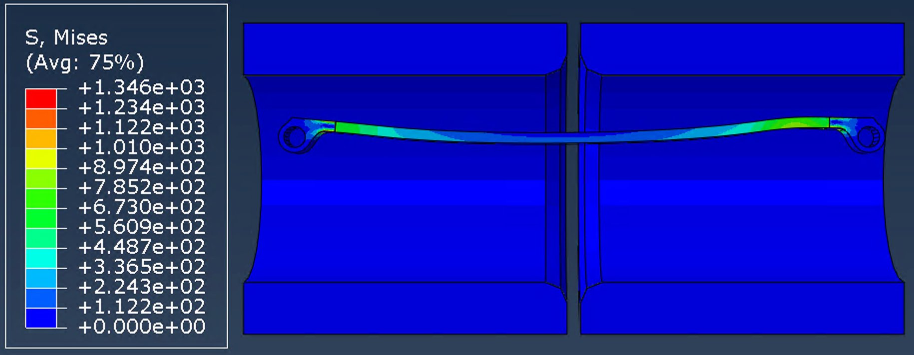
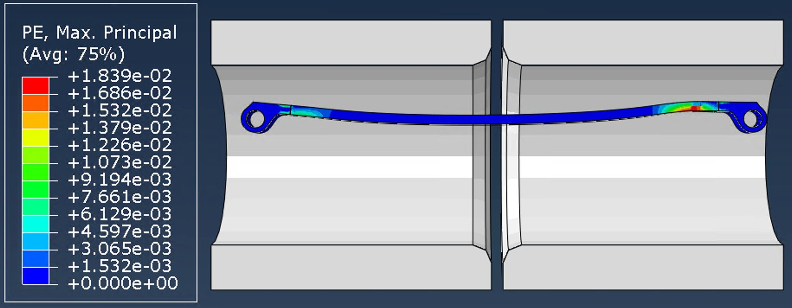
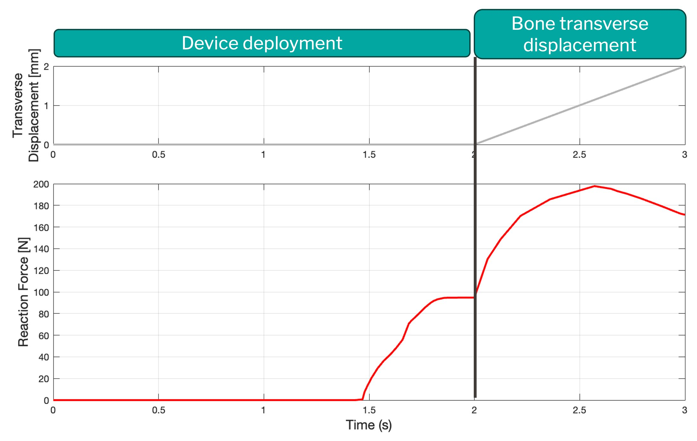
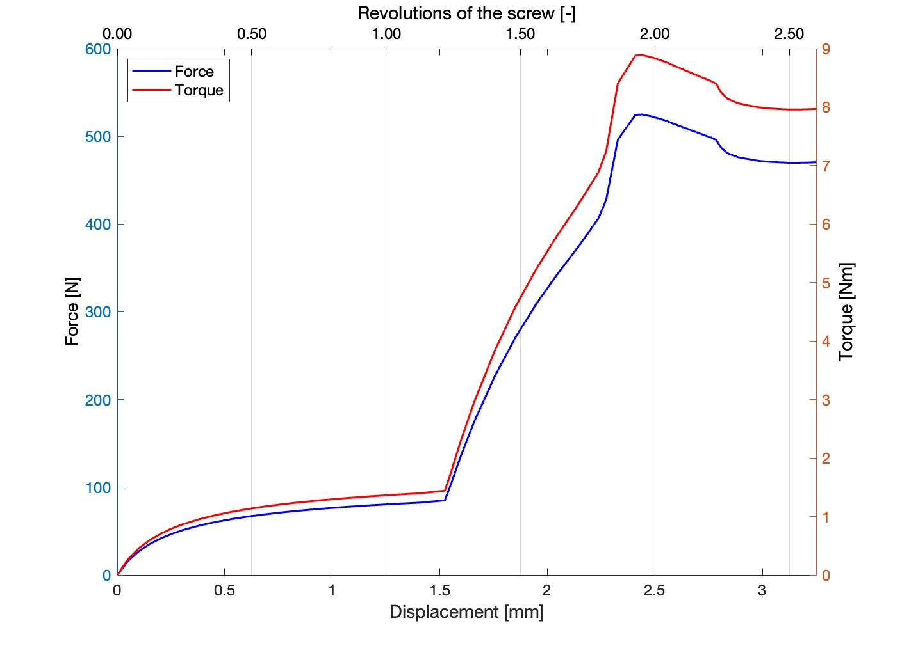
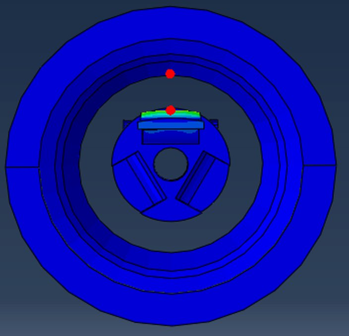

Femoral shaft fractures in elderly osteoporotic patients are typically treated with external nailing requiring 10–14 days of immobilization — highly detrimental for weakened bone. Working directly with a CHUV surgeon, I designed a dual-conformation intramedullary device that deploys radially expandable Ti-6Al-4V flanges from inside the bone via a cannulated screw system compatible with existing Stryker surgical tools.
The full pipeline ran in SolidWorks (CAD) and Abaqus (nonlinear FEA) across three simulation steps: deployment, transverse loading, removal. Key design problem: previous iterations couldn't be removed after loading — plastic deformation pushed flanges against bone. My hinge joint design solved this: minimum clearance post-loading is 3.77 mm, identical to insertion.
3.77 mmBone–device clearance post-loading
~27 NmMax deployment torque
15,578Elements in converged mesh
Ti-6Al-4VFDA-approved implant alloy
SolidWorksAbaqus FEAImplant DesignTi-6Al-4V / Steel 316LNonlinear SimulationGD&TSurgeon Collaboration

Deployed device inside fractured femur — SolidWorks

Conformation 1 — Insertion
→

Conformation 2 — Deployed

Screw actuation: rotating translates bottom cylinder → deploys flanges radially

Device assembly — flexible guide, fixed/movable cylinders, Ti-6Al-4V flanges
Finite Element Analysis — Abaqus CAE 2023

Step 1 — Deployment stress

Step 2 — Transverse loading

Step 3 — Return to initial

Plastic strain (Max. Principal) — localized at hinge, flanges return to insertion position

Reaction force across all simulation steps

Stabilization force vs. cylinder displacement — optimal [3.0–3.5 mm]

Min. bone–device distance after loading: 3.77 mm → safe removal confirmed